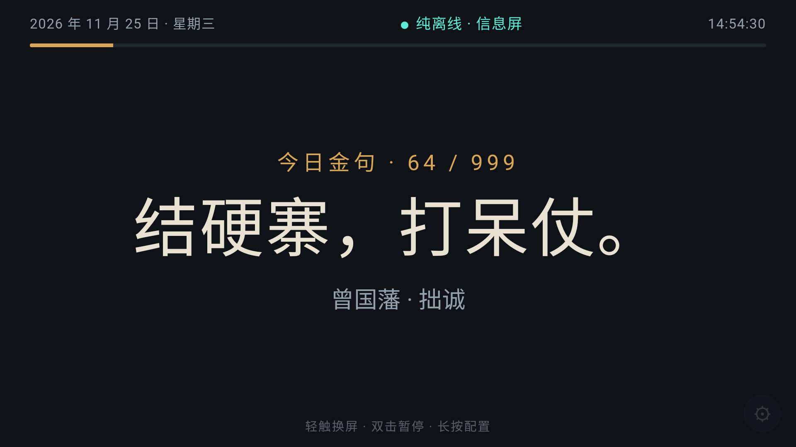
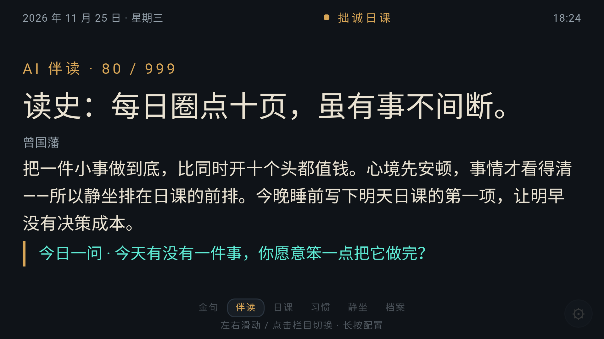
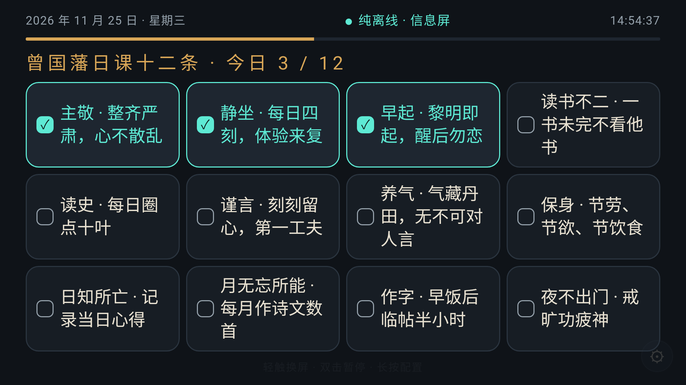
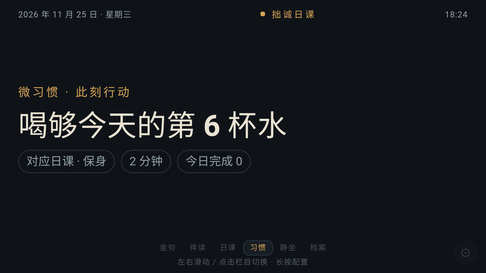
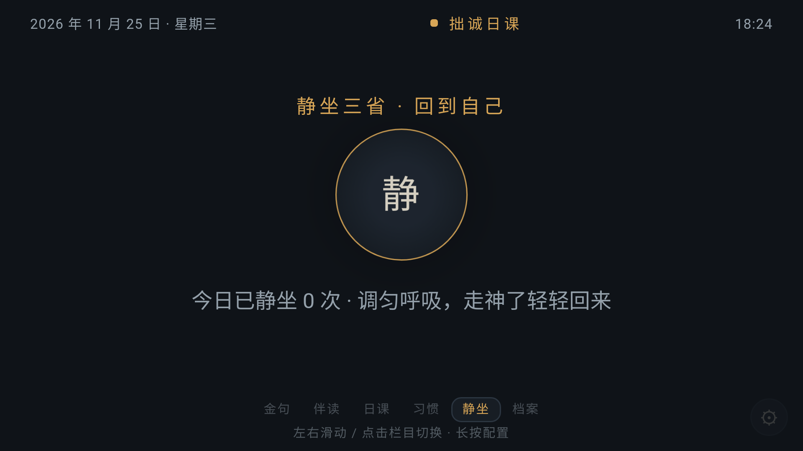
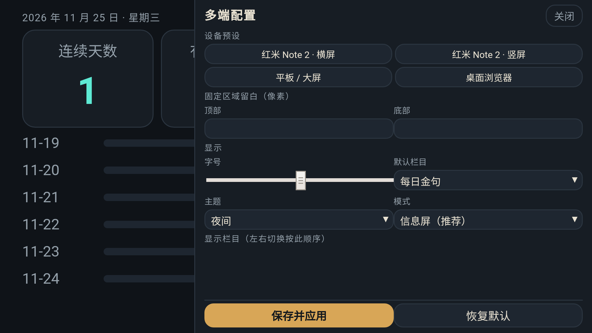
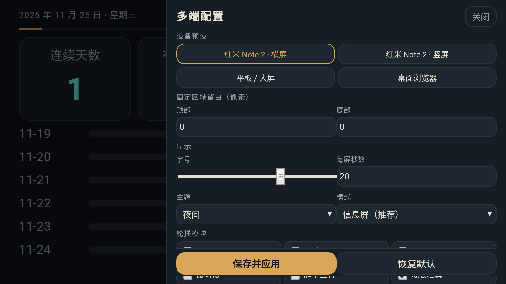

「拙诚」是一种笨拙而真诚的功夫观：不取巧、不走捷径，用日复一日的固定动作积累复利。拙诚日课终端把这套哲学装进一部退役手机——它不追求智能，只追求常亮、在场、低干扰：床头一张安静发光的桌子，抬头即是今日的金句、日课与微习惯。
调度解耦、变更推送、每日记录持久化——工程上先立住不倒，才谈得上修行。
999 + 999 条语料在构建期预生成，离线可用、无需任何 API key，可复现、可校验。
信息屏每 20 秒换一屏（可调），抬头就有新内容；完整交互模式保留金句 180 秒、伴读 600 秒、微习惯每小时的节奏，可暂停翻阅，不被强制打断。
以下均为红米 Note 2 真机实拍截图（LineageOS + 全离线版 2.0 信息屏），非电脑渲染、非模拟。顶部只有一条极简状态线与进度条，底部只有一行会自动淡出的操作提示——原先占用屏幕的标题栏与七项导航已取消。轻触换屏、双击暂停、长按配置，其余时间自动轮播。点击图片可看大图。







红米 Note 2 真机实拍 · 信息屏默认 · 无电脑连接 / 无等待推送 · 打开同样的信息屏演示 ↗
打开即是全屏展示：金句、伴读、日课、微习惯、静坐、档案六类信息自动轮播。没有顶部标题栏、没有底部七项导航，屏幕全部留给内容；轻触换屏、双击暂停、长按配置，平时不需要任何操作。
内置红米 Note 2 横屏 / 竖屏、平板大屏、桌面浏览器四套预设，可自定义顶部与底部固定区域留白、字号、每屏秒数和轮播模块。换设备不必改代码，配置只存本机。
| 模块 | 节奏 | 说明 |
|---|---|---|
| 信息屏轮播 | 默认每屏 20 秒（可调 5–300 秒） | 六类内容自动换屏，顶部一行日期/时间/离线标识 + 进度条；底部提示 6 秒后自动淡出 |
| 每日金句 | 内置语料，随轮播呈现 | 999 条、43 个来源；横屏大字醒目，竖屏自动缩放，长句自动换行 |
| AI 伴读 | 随轮播呈现 | 999 条自包含条目：原文 + 品读 + 今日一问 + 关联日课；全部构建期预生成 |
| 日课十二条 | 随轮播呈现 · 按日存本机 | 曾国藩十二课四列全览（矮屏自适应），勾选状态与进度即时可见，历史只增不覆盖 |
| 微习惯 | 随轮播呈现 | 30 条微习惯逐条标注真实时长（1–20 分钟），对应日课一并显示 |
| 静坐三省 | 随轮播呈现 | 呼吸圈引导、今日次数与省身提示；完整交互模式含计时与省身笔记 |
| 成长档案 | 按日持久化在手机 | 连续天数、有记录天数、微习惯完成、静坐时长、近 7 日日课条；完整模式可导出 Markdown / JSON |
| 完整交互模式 | 配置中一键切换 | 保留总览、翻阅、收藏、勾选、导出等七页操作；信息屏与完整模式共用同一份本地数据 |
| 桥接中枢（可选） | 30 秒心跳（电脑端） | v1.4.4 保留六任务解耦调度、硬件采集与每日推送；新用户无需使用 |
语料库是本项目最有价值的部分：全部离线、来源真实、构建可复现（固定随机种子），并配有全量校验器（数量 / 重复 / schema / 版权白名单）。
30+ 来源：拙诚日课原创 220 条，老子《道德经》88 条，孔子《论语》82 条，《金刚经》63 条，曾国藩 57 条，《增广贤文》《飞鸟集》《菜根谭》《传习录》……文本零重复，平均 15.8 字。
每条自包含：原文 + 解读 + 今日一问 + 关联日课 + 主题标签。解读由构建器按主题族语池预生成，不依赖网络与密钥。
30 条 2 分钟微习惯逐条映射日课十二条；另附 12 条日课提醒语，每 15 分钟轮换推送。
公版经典保留原文；现代著作（冥想、人类简史、生死疲劳等）只做主题转写、不收录原文引文，并如实标注「拙诚日课 · 转写」。校验脚本内置来源白名单。
全离线版 2.0把内容引擎搬进手机：一个自包含 HTML 应用随 APK 内置，WebView 自己定时轮换、自己记账。桥接版则保留「手机 + 常驻电脑」的推送架构，两种模式共用同一套语料与品牌。
# 全离线版 2.0 信息屏（默认，零电脑 / 零网络 / 零 API Key） offline.html 单文件应用 → 内嵌 999+999 语料 / 30 微习惯 / 12 日课 info screen 六模块自动轮播 · 每屏 20s（可调）· 轻触/双击/长按三种手势 multi-device note2 横竖屏 / 平板 / 桌面预设 · 固定区域留白 · 字号 · 模块开关 localStorage 日课勾选 / 微习惯状态 / 静坐 / 省身 / 收藏 / 多端配置 APK PhoneBox 基座只负责承载 WebView，顶底导航与离线浮层都不加载 # 桥接版 v1.4.4（可选，电脑端 Python 中枢） # 六任务解耦调度（间隔全部可用环境变量调整） heartbeat 30s → hub-info 心跳 / 运行状态 quotes 180s → daily-quote 金句组 × 10 句（品读模式） companion 600s → ai-passage 伴读组 × 5 条（单屏阅读器） microhabit 3600s → micro-habit 微习惯轮换 hardware 120s → phone-batt 电量 / 环境光（WiFi adb） reminder 900s → rike-reminder 日课提醒轮换 # 工程化 内容哈希 → 只推变化 · 指数退避 · 单实例锁 · 日志轮转 records/YYYY-MM-DD.json 每日档案 · CLI（once / dry-run / check / doctor） 19 个单元测试 · manage.py 一键启停 / 备份 / 安装
daily-quoteai-passageai-insightmicro-habithub-infoquote-metarike-reminderphone-battphone-sensor
全部通过 PhoneBox 本地 API（/api/push/<key>）推送，手机端无需任何额外服务。
MT6795 · 1080×1920 · 刷入 LineageOS 16（Android 9）· 可 root。一部十年前的手机，屏幕素质至今足够做床头桌面——这正是本项目的寓意：物尽其用，也是一种拙诚。
PhoneBox 是让旧手机变成信息面板的出色开源项目。本仓库提供了完整的 APK 改名 / 换图标工具链（纯 Python 二进制补丁，无需 apktool），产出「拙诚日课」独立应用。
开发者选项保持唤醒 + 关闭自动锁屏；WebView 黄条去除方案、APK 重签名流程均已整理进踩坑指南。
任何能跑 Android 5+ 并安装 PhoneBox 的设备都可用：旧手机、旧平板皆宜。没有 Wifi adb 也可只跑基础推送。
下载全离线版 2.0 信息屏 · v1+v2 双签名 · 2,462,693 字节 SHA-256：5ced6f1c7f41a11e0e284f2116fef191250735889cd48d4218303227e487421d
已在 Android 9（LineageOS 16 / 红米 Note 2）真机验证：打开即进入全屏信息屏，没有顶部标题栏和底部导航，无需配对、无需电脑端。若你的屏幕有固定系统栏，长按屏幕进入「多端配置」设置顶部/底部留白即可。与旧版同一签名，可直接覆盖安装；小米 HyperOS 侧载检测可能拒绝安装，可用 adb 直装。详见 发布与校验说明。
不想装 APK：手机浏览器直接打开 offline.html，功能完全一样，数据存在浏览器本地。
git clone https://github.com/zhubao315/zhuocheng-terminal.git cd zhuocheng-terminal
cd scripts
python setup_overview.py # 总览页 + 六个页面组件一键部署
代码：MIT License。数据：公版原文进入公有领域；「拙诚日课 · 原创 / 转写」条目与解读随仓库许可同步发布。请保留来源标注，勿将转写条目冒充原书引文。